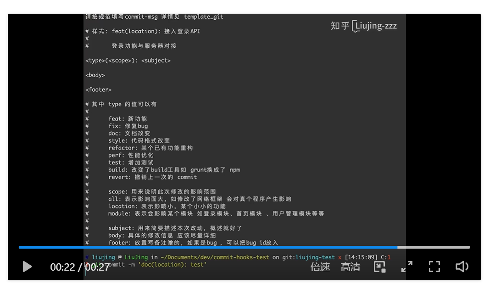

https://zhuanlan.zhihu.com/p/521707440
1. 设置git模板(不推荐)
这里是输入git commit时的输出信息，不会强制进行check
git config --global commit.template gitcommit_template.txt
cat gitcommit_template.txt
type(模板)：标题
JIRA-ID: ABC000
soulution:
rootcause:
git commit 格式:
type(模块):标题 ------必填 （常用 feat: 新特性 fix: 修改问题 refactor: 代码重构docs: 文档修改 style: 代码格式修改 test: 测试用例修改 chore: 其他修改， 比如构建流程， 依赖管理revert: 用于撤销以前的 commit ）
JIRA-ID:ABC-XXXX ------必填 （需求JIRA ID 或 问题单JIRA ID，无JIRA，可默认ABC-0000） 超链接跳转到对应JIRA
[rootcause]:[rootcause描述] -------可选
[solution]:[solution描述] -------可选
推荐使用方式，配置gitcommit_template：
2. 使用hook(推荐方式)
强制check
https://zhuanlan.zhihu.com/p/467698693
明确commit message 规范能大大提高代码维护的效率，提高可读性，避免风格迥异。应注重代码和流程的规范性，永远不要在质量上将就。本文简单介绍在客户端通过 git commit hooks 拦截。
效果如下：

脚本：
#!/bin/sh
regex='^(feat|fix|doc|style|refactor|perf|test|build)\(\s*(location|module|all|.+)\):\s*[^\s]+'
result=$(grep -E $regex $1)
# current branch name
current_branch=$(git branch | grep \* | cut -d ' ' -f2)
# if [[ $result ]]
if [[ $result || $current_branch != "dev" ]]
then
echo $result
else
echo '请按规范填写commit-msg 详情见 template_git\n'
cat ./template_git # 该文件放在项目home目录，如workspace/llvm，与.git同级的目录
exit 1
fi
将commit-msg文件放于.git/hooks/commit-msg目录下即可自动调用，这里该文件需要有可执行权限。
commit-msg只要是可执行文件，用python nodejs等写也都是可以的。不过最好是用sh写，因为Python环境，机器不一定有装。